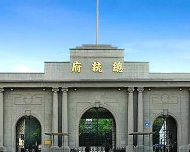

南京总统府欢迎您
您现在所在的位置是总统大堂
总统府大堂为中式建筑，抱厦五间面阔七间，硬山顶单层双檐，与二堂及穿堂相连，呈“工”型殿。原为太平天国金龙殿，又称荣光大殿，相传洪秀全病逝后即葬于此。清兵攻占天京后，大殿被毁，于同治九年（1870）重建两江总督署大堂。1912年1月1日孙中山就任中华民国临时大总统的就职典礼，就在大堂后的西暖阁举行。1927年国民政府定都南京后，作为国民政府的大堂。1929年国民政府部分改建时，将孙中山手书的“天下为公”匾额挂于大堂正中横梁上。之后，大堂先后被国民政府和总统府沿用。至今保存完好。